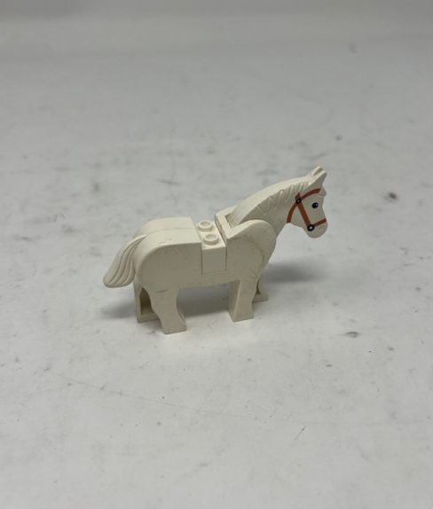

<div class="textcontainer">
<p class="margin"> </p>
<h3>Week 5: 3D Design & Printing</h3>
<h4>3D Print Section</h4>
<p class="margin"> </p>
<p><em>BALL IN BOX DESIGN</em></p>
<img src="./Ball in Box Angle.png" alt="Ball in Box Angle" style="max-width: 100%; height: auto;">
<p class="margin"> </p>
<p><em>FILE DOWNLOADS</em></p>
<div class="flexrow">
<a id="btn" href="./Ball in Box_gcode.bgcode" download style="text-decoration: underline;">Download Gcode</a>
<a id="btn" href="./Ball in Box.f3d" download style="text-decoration: underline;">Download F3D</a>
<a id="btn" href="./Ball in Box.stl" download style="text-decoration: underline;">Download STL</a>
</div>
<p class="margin"> </p>
<p><em>INTERACTABLE STL</em></p>
<div id="stl-viewer" style="width: 100%; height: 400px; background-color: #f0f0f0;"></div>
<p class="margin"> </p>
<p><em>PRUSA SLICER</em></p>
<video src="./PRUSA Slicer.mov" controls style="max-width: 100%;"></video>
<p class="margin"> </p>
<p><em>3D PRINTER IN ACTION</em></p>
<video src="./3D Printer in Action.MOV" controls style="max-width: 100%;"></video>
<p class="margin"> </p>
<p><em>FAILED PRINT</em></p>
<img src="./Failed Print.png" alt="Failed Print" style="max-width: 100%; height: auto;">
<p class="margin"> </p>
<p><strong>Documentation:</strong></p>
<pre class="margin">
The small 3D print I made was fun to design, and it is a simple investigation of our ability to print 3D designs with embedded objects. In this case
the ball inside of the print is too big to be let out of the holes in the side of the cube. I had a few sets of learnings and failures from this process. Firstly, I
have not 3D printed anything in a while, so it took a bit of a learning curve to figure out the new slicer. Once I had the settings dialed in and had become familiarized with
all of the custom bits of setup, I was able to get going. I thought, at first, that I would be able to print the ball inside the box very easily and without supports. The problem
with that assumption was that I was not considering the new printer. In the past, I have used circles as shapes that I have ignored supports for. It seems like with these printers
that is not possible. As a result, I had a catastrophic failure on one of my prints. The ball and box fused at the top where the print came off of the rails on one of the overhangs, and
in that moment I decided to turn on the organic supports. While it added time to the print, it also added reliability. The printer itself is a lot of fun to use,
and I have always found it mesmerizing how it can create things. I look forward to using it for my final project components, and am very excited to get the settings
honed in so that I can be as successful as possible. There are certainly things I do not yet understand about it, but testing different textures, patterns, and structures will be
a joy. But, with the initial disaster out of the way, I was then able to reset the print. The good thing about 3D printers is that they are perfect
for rapid prototyping, and it was easy to reset it, experience failure, and go again.
</pre>
<p class="margin"> </p>
<p><em>FINISHED PRINT</em></p>
<img src="./box with supports.png" alt="Finished print 1" style="max-width: 100%; height: auto;">
<p class="margin"> </p>
<img src="./Finished print.png" alt="Finished print 2" style="max-width: 100%; height: auto;">
<p class="margin"> </p>
<p><em>FINAL ITEM VIDEO</em></p>
<video src="./final item video.MOV" controls style="max-width: 100%;"></video>
<p class="margin"> </p>
<p><strong>Documentation:</strong></p>
<pre class="margin">
At last, the print came out cleanly! After a long print with far more supports, I was able to come back to the printer and see it removed and finished. Now, the supports were
quite the last to take off, especially since some of them were inside the outer enclosure and on the ball. With some pliers, the work was done quickkly, but with a bit of damage
done to the item. I have started theorizing about a better way to make this print. I think that the ball itself is small enough that it woudl normally not need the supports. Additionally,
I am not so sure that supports are needed at all! The first print could have fialed for any number of reasons. Perhaps the print was moving around on the bed prematurely. Still, the damage was done.
Nevertheless, the print came out clean and I was able to get it out of the printer. I took a video of the items motion above. It is pretty cool to ahve an item that is in an item, and I could go down that rabbit
hole very far to get shapes embedded in shapes. Still, I am happy with teh result overall, and really liked my experience with the 3D printer this week. I have some challenges to
still overcome, and I want to hone in my understanding of supports and the printer, but overall I am very happy with my final item.
</pre>
<p class="margin"> </p>
<hr>
<p class="margin"> </p>
<h4>3D Scan Section</h4>
<p class="margin"> </p>
<p><em>LEGO HORSE</em></p>
<p></p>
<p class="margin"> </p>
<p><em>HORSE SCAN</em></p>
<img src="./horse scan.png" alt="Horse scan" style="max-width: 100%; height: auto;">
<p class="margin"> </p>
<p><em>HORSE IN 3D</em></p>
<video src="./Horse 3D.mov" controls style="max-width: 100%;"></video>
<p class="margin"> </p>
<p><strong>Documentation:</strong></p>
<pre class="margin">
The 3D scanner was a different beast than the simple Fusion 360 modeling and 3D printing project. I had more failures than I could count, mainly with the scanner not being able to scan what I wished it could.
I started out by trying to do my face, and while the scanner was able to capture it decently well, the speed at which we moved the scanner disrupted the scan and made the point cloud nearly unusable.
Furthermore, the back was totally empty, and so while I have a mask-shaped scan saved to the computer, it was not the final scan I went with. Next I tried a small knight figurine. This is where the mistakes piled up.
The figure was very small, making it hard to get the scanner to recognize it on the background. Additionally, the kneepads and the helmet of the knight were bronze and shiny. I thought that they were light enough to be captured
and dull enough to be recognized, but instead they came up as blank spots on the scan. Finally, I found my last hope: a Lego horse. This time the scan was much smoother.
Putting aside some issues I had with the turntable at the beginning of the process, I was able to get 2 different angles of point clouds, fuse each cloud, merge the two angles of rotation, and the result is a decently
smooth scan of the horse. It is far from perfect, but it is a good start. There are some holes where the dark details are, the bridle and the eyes, for example, but those are all things that could be cleaned.
For now, it is a good starting point for understanding the capabilities of the scanner, and also how much effort it takes to digitize something from the real world into a 3D model. There are a lot of
different techniques that I could have used to scan the item, but this is a good starting point. I am very interested by the possibility of taking lots of photos around an object
to make a cohesive model, but that may be a project for another time. Overall I learned a lot this week about the tools we have at our disposal, and I am looking forward to putting them into action as the
weeks continue to go on.
</pre>
<p class="margin"> </p>
<p><a href="../13_finalproject/index.html#week5-update">→ Final Project Week 5 Update</a></p>
<p class="margin"> </p>
</div>